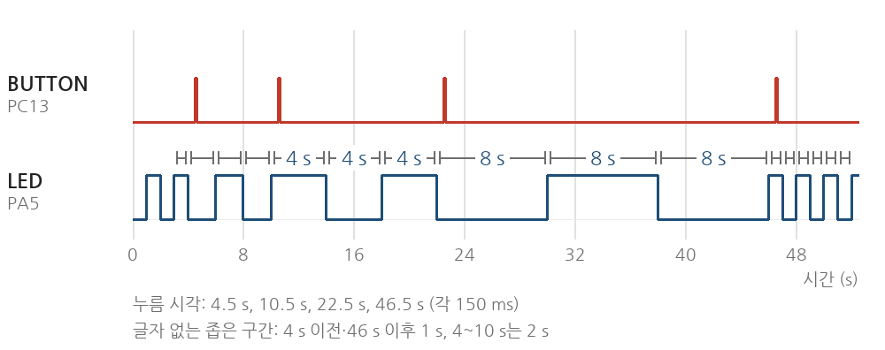
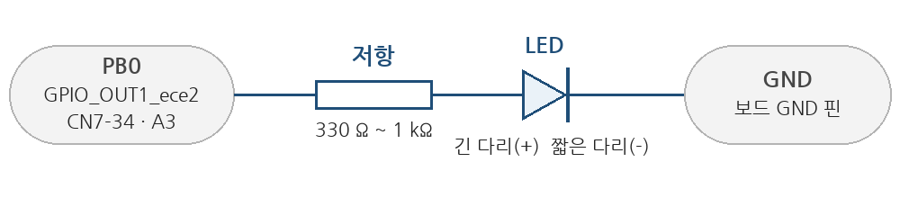
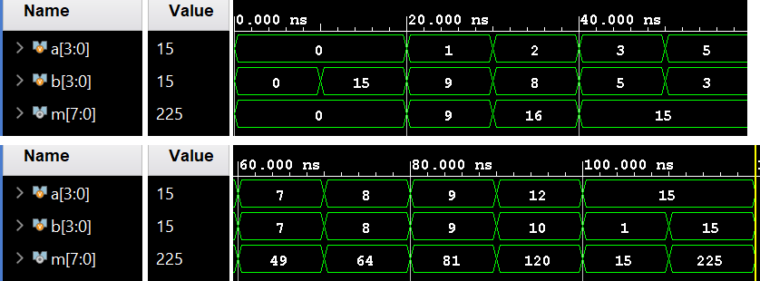
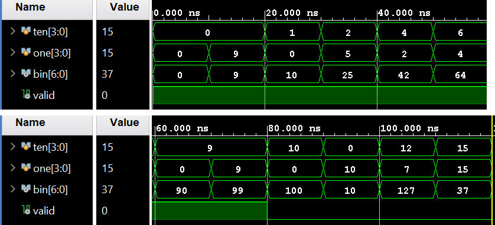

tae2yi/UOS_ece2를 풀 해서 진행Glaysia/ece2_474 v1.1.0| 순서 | 항목 | 할 일 | 끝났다고 볼 기준 |
|---|---|---|---|
| 0 | 준비 | 저장소 풀, 도구 확인, 보드 연결 | 빌드 성공, ST-LINK 인식 |
| 1 | 제공 예제 1 | 1초 간격 LED 점멸 | PA5 LED가 1초마다 바뀜 |
| 2 | 제공 예제 2 | 버튼을 누르면 LED 상태 변경 | 누를 때마다 한 번씩 바뀜 |
| 3 | STM32_0_과제1 | 버튼으로 점멸 간격 1→2→4→8→1초 | 세 조건(3.3절) 모두 확인 |
| 4 | STM32_0_과제2 | 같은 동작을 PB0 외부 LED로 | 외부 LED에서 간격 변경까지 확인 |
| 5 | FPGA ① 4비트 곱셈기 | 시뮬레이션 → 보드 시연 | 표의 입력 12개가 LED와 일치 |
| 6 | FPGA ② BCD→이진수 | 시뮬레이션 → 보드 시연 | 유효 8개·무효 4개가 LED와 일치 |
| 7 | 마무리 | 사진·영상 정리, 커밋, 태그 | 푸시 완료, 해시 기록 |
cd ~/UOS_ece2 # 저장소를 둔 위치로 바꾼다
git pull
ls lab4lab4 아래 구성은 다음과 같다.
| 폴더 | 내용 |
|---|---|
stm32_lab/ | 수업 프로젝트 v1.1.0. Core/Src/ece2_474_routine.c에 과제1·2 코드가 들어 있다. |
stm32_0_hostsim/ | 보드 없이 PC에서 과제 코드를 돌려 본 것. variants/에 제공 예제 1·2와 떨림 대비 코드가 있다. |
lab4_01_mult_4bit/ | 4비트 곱셈기. src/, sim/, constraints/, bitstream/mult_4bit.bit |
lab4_02_bcd_conv/ | BCD→이진수. 구성은 위와 같고 bitstream/bcd_conv.bit |
report/pre/ | 예비보고서(docx, PDF)와 그림·로그 |
manual/ | 이 문서 |
build/와 vivado/ 폴더는 저장소에 올리지 않았다. 맥에서 처음 빌드할 때 새로 만들어진다.
lab4/stm32_lab/ece2_474.code-workspace를 연다. 터미널에서는 code lab4/stm32_lab/ece2_474.code-workspace.gnu-tools-for-stm32도 고른다.STM32Cube: Launch ST-Link GDB Server를 고르고 F5. main에서 멈추면 F5를 한 번 더 누른다.맥에 설치된 STM32CubeIDE 안의 컴파일러와 STM32CubeProgrammer를 쓴다. cmake와 ninja가 없으면 brew install cmake ninja.
# 컴파일러 위치를 찾아 PATH에 넣는다
GCC="$(find /Applications -name arm-none-eabi-gcc -type f 2>/dev/null | head -1)"
echo "$GCC" # 비어 있으면 CubeIDE 설치 위치를 직접 찾는다
export PATH="$(dirname "$GCC"):$PATH"
cd lab4/stm32_lab
cmake --preset Debug
cmake --build --preset Debug # build/Debug/ece2_474.elf 생성
# 보드에 기록하고 리셋한다
PROG="$(find /Applications -name STM32_Programmer_CLI -type f 2>/dev/null | head -1)"
"$PROG" -c port=SWD -w build/Debug/ece2_474.elf -v -rstWindows에서 Arm GCC 13.3으로 빌드했을 때 크기는 Flash 25,848 B, RAM 2,656 B였다. 컴파일러 버전이 다르면 조금 달라진다. 방법 B에는 디버거가 없다. 이번 주 과제는 디버거 없이 할 수 있고, 중단점은 다음 주(STM32_1_과제4)에 필요하다.
brew install icarus-verilog # iverilog, vvp가 없을 때만
cd lab4/lab4_01_mult_4bit
python3 tools/fpga_lab.py check # Python, Git, Icarus 확인Vivado는 2026.1을 쓰는 환경의 터미널에서 vivado -version으로 확인한다. Vivado가 가상 머신 안에 있다면 JTAG 케이블의 USB를 그 가상 머신에 연결해야 Hardware Manager가 보드를 찾는다.
수정하는 파일은 lab4/stm32_lab/Core/Src/ece2_474_routine.c 하나다. polling_routine()을 교체한다. 같은 이름의 함수를 하나 더 만들면 링크 오류가 난다. ece2_474_init()은 비워 둔다.
git restore lab4/stm32_lab/Core/Src/ece2_474_routine.clab4/stm32_0_hostsim/variants/example1_blink.c의 polling_routine 함수 본문을 ece2_474_routine.c의 같은 함수 자리에 붙여 넣고 F5.
| 볼 것 | 예상 | 실제(적기) |
|---|---|---|
| PA5 LED(LD2, 녹색)가 바뀌는 간격 | 1초. 켜짐 1초 + 꺼짐 1초 = 주기 2초 | |
| 10번 바뀌는 데 걸린 시간 | 약 10초 | |
| 전원을 넣은 직후 | 꺼진 상태로 시작, 1초 뒤 처음 켜짐 |
variants/example2_button.c의 함수로 교체하고 F5. 버튼은 파란색 B1(PC13)이다. 검은색은 RESET이다.
| 볼 것 | 예상 | 실제(적기) |
|---|---|---|
| 짧게 한 번 누름 | LED 상태가 한 번 바뀜 | |
| 3초 이상 누르고 있음 | 누른 순간 한 번만 바뀌고 그대로 | |
| 0.2초 안에 두 번 빠르게 누름 | 두 번째는 무시될 수 있음(200 ms 조건) | |
| 10번 눌렀을 때 바뀐 횟수 | 10번. 다르면 떨림이나 놓침이 있는 것 |
git restore로 과제 코드로 돌아가 F5. 파일 위쪽의 STM32_0_USE_EXTERNAL_LED가 0인지 확인한다(55번째 줄).
void polling_routine(void)
{
static GPIO_PinState previous = GPIO_PIN_RESET;
static uint32_t last_press_ms = 0;
static uint32_t last_toggle_ms = 0;
static uint32_t interval_ms = 1000U; /* 추가한 변수: 현재 간격 */
GPIO_PinState current =
HAL_GPIO_ReadPin(BUTTON_ece2_GPIO_Port, BUTTON_ece2_Pin);
uint32_t now_ms = HAL_GetTick();
if (current == GPIO_PIN_SET && previous == GPIO_PIN_RESET /* 누른 순간 */
&& now_ms - last_press_ms >= 200U) /* 200 ms 잠금 */
{
last_press_ms = now_ms;
interval_ms = (interval_ms >= 8000U)
? 1000U : interval_ms * 2U; /* 1→2→4→8→1 s */
}
previous = current;
if (now_ms - last_toggle_ms >= interval_ms) /* 간격이 지났으면 */
{
last_toggle_ms = now_ms;
HAL_GPIO_TogglePin(BLINK_LED_GPIO_Port, BLINK_LED_Pin);
}
}| # | 확인 방법 | 예상 | 실제(적기) |
|---|---|---|---|
| 1 | 리셋 후 버튼을 한 번씩 누르면서 간격을 잰다. 간격마다 3번 이상 바뀌는 것을 본 뒤 다음으로 넘어간다. | 1 → 2 → 4 → 8 → 1초 순서 | |
| 2 | 버튼에서 손을 떼고 30초쯤 둔다. | 고른 간격으로 계속 깜빡임 | |
| 3 | 버튼을 6초 이상 누르고 있는다. | 간격은 한 번만 바뀜 |
last_toggle_ms)은 그대로다. 그래서 다음 변화는 "마지막으로 바뀐 때 + 새 간격"에 온다. 1초 간격에서 바뀐 지 0.5초 뒤에 누르면 그로부터 1.5초 뒤에 바뀐다.
variants/task1_release_guard.c의 함수로 교체한다. 이 코드는 누름·뗌 어느 쪽이든 직전 변화에서 50 ms가 지난 뒤의 누름만 인정한다.
교체한 코드는 LED 이름이 LED_ece2_…로 적혀 있으니 과제2에서도 쓰려면 BLINK_LED_GPIO_Port, BLINK_LED_Pin으로 바꾼다. 바꾸기 전후 결과를 둘 다 기록해 두면 결과보고서의 "문제 해결 과정"이 된다.#define STM32_0_USE_EXTERNAL_LED 1로 바꾼다. 이 값이 1이면 LED 핀이 GPIO_OUT1_ece2(PB0)로 바뀐다.GPIO_OUT1_ece2 두 곳을 GPIO_OUT2_ece2로 바꾼다.PB0의 헤더 위치는 CN7의 34번 핀(Arduino 헤더로는 A3)으로 알고 있으나 보드 설명서로 확인하지 못했다. 꽂기 전에 UM2505의 커넥터 표나 보드 뒷면 표기와 대조한다.

| 볼 것 | 예상 | 실제(적기) |
|---|---|---|
| 외부 LED의 간격 변화 | 1 → 2 → 4 → 8 → 1초 | |
| 내장 LED(PA5) | 깜빡이지 않음(꺼져 있음) | |
| 6초 누르고 있기 | 한 번만 바뀜 | |
| 쓴 저항 값과 LED 색 | 330 Ω에 적색이면 약 4 mA |
외부 LED가 안 켜지면: LED 방향 → 꽂은 헤더 핀 → 매크로가 1인지 → F5로 다시 내려받았는지 순서로 본다. 과제1과 과제2는 각각 영상으로 남긴다.
두 설계 모두 클록이 없는 조합회로다. 스위치를 바꾸면 LED가 바로 바뀐다. 입력은 버스 스위치 8개, 출력은 LED 8개다.
cd lab4/lab4_01_mult_4bit
python3 tools/fpga_lab.py simulate # 256개 입력 전수 검사
# 예상 출력: PASS multiplier: 256 input pairs
mkdir -p build
iverilog -g2012 -o build/view.vvp src/*.v sim/tb_view.sv && vvp build/view.vvp
# 예상 출력: PASS multiplier view: 12 directed pairslab4_02_bcd_conv에서도 같은 명령을 쓴다. 예상 출력은 PASS BCD: 100 valid and 156 invalid inputs와 PASS BCD view: 12 directed inputs다.
SIMULATED는 실행이 끝났다는 뜻이고, 정답 여부는 PASS 줄로 본다.
저장소의 bitstream/*.bit는 Vivado 2025.2로 만든 것이다. 핀이 교재와 같다면 그대로 내려받아도 된다. XDC를 고쳤거나 2026.1로 다시 만들고 싶으면 아래를 실행한다.
cd lab4/lab4_01_mult_4bit
vivado -mode batch -source tools/build_bitstream.tcl -log tools/build_bitstream.log -nojournal
# 끝에 BITSTREAM_DONE 줄이 나오면 성공. bitstream/mult_4bit.bit가 새로 만들어진다.이 스크립트는 vivado/에 프로젝트를 새로 만들고 합성·구현·비트스트림 생성까지 한 뒤 evidence/vivado/의 보고서 4개를 덮어쓴다.
GUI로 보려면 Vivado에서 vivado/lab4_01_mult_4bit.xpr을 연다. 시뮬레이션은 Run Simulation → Run Behavioral Simulation이고, 파형용 TB로 바꾸려면 Tcl Console에 set_property top tb_view [get_filesets sim_1]을 입력한다.
bitstream/mult_4bit.bit(또는 bcd_conv.bit)를 고르고 Program.Tcl로 하려면 Vivado Tcl Console에서:
open_hw_manager; connect_hw_server; open_hw_target
set d [lindex [get_hw_devices] 0]
set_property PROGRAM.FILE {bitstream/mult_4bit.bit} $d
program_hw_devices $d수업 자료에는 XDC가 없어서 LAB1의 4비트 가산기 스위치 핀과 LAB3의 LED 핀을 그대로 썼다. 교재의 곱셈기·BCD 변환 실습 핀 표와 다르면 XDC를 고치고 4.2절로 비트스트림을 다시 만든다.
| 신호 | [3] | [2] | [1] | [0] | 곱셈기 | BCD 변환 |
|---|---|---|---|---|---|---|
| 스위치 묶음 1 | Y1 | W3 | U2 | T1 | a[3:0] | ten[3:0](십의 자리) |
| 스위치 묶음 2 | W4 | W1 | V4 | U4 | b[3:0] | one[3:0](일의 자리) |
| LED 핀 | L4 | M4 | M2 | N7 | M7 | M3 | M1 | N5 |
|---|---|---|---|---|---|---|---|---|
| 곱셈기 | m[7] | m[6] | m[5] | m[4] | m[3] | m[2] | m[1] | m[0] |
| BCD 변환 | valid | bin[6] | bin[5] | bin[4] | bin[3] | bin[2] | bin[1] | bin[0] |
내려받은 뒤 먼저 스위치를 하나씩만 올려 어느 스위치가 어느 비트인지 확인한다. 곱셈기에서 b=1로 두고 a의 스위치를 하나씩 올리면 같은 자리의 LED가 켜져야 한다. 순서가 뒤집혀 있으면 XDC의 핀 순서가 보드와 반대다.
파형용 TB(sim/tb_view.sv)와 같은 입력 12개다. LED 열은 m[7]…m[0] 순서이고 1이 켜짐이다.
| a | b | a (2진) | b (2진) | m | LED m[7:0] | 보는 이유 | 실제 LED |
|---|---|---|---|---|---|---|---|
| 0 | 0 | 0000 | 0000 | 0 | 0000 0000 | 모두 꺼짐 | |
| 0 | 15 | 0000 | 1111 | 0 | 0000 0000 | 0을 곱하면 0 | |
| 1 | 9 | 0001 | 1001 | 9 | 0000 1001 | 1을 곱하면 그대로 | |
| 2 | 8 | 0010 | 1000 | 16 | 0001 0000 | 2의 거듭제곱 = 자리 이동 | |
| 3 | 5 | 0011 | 0101 | 15 | 0000 1111 | 순서를 바꿔도 같은 값 | |
| 5 | 3 | 0101 | 0011 | 15 | 0000 1111 | ||
| 7 | 7 | 0111 | 0111 | 49 | 0011 0001 | 부분곱이 여러 개 겹침 | |
| 8 | 8 | 1000 | 1000 | 64 | 0100 0000 | m[6]만 켜짐 | |
| 9 | 9 | 1001 | 1001 | 81 | 0101 0001 | ||
| 12 | 10 | 1100 | 1010 | 120 | 0111 1000 | ||
| 15 | 1 | 1111 | 0001 | 15 | 0000 1111 | ||
| 15 | 15 | 1111 | 1111 | 225 | 1110 0001 | 최댓값. m[7]이 켜지는 유일한 예 |

십의 자리(ten)와 일의 자리(one)를 각각 4비트로 넣으면 bin = ten×10 + one이 7비트로 나온다. 두 자리 모두 0~9일 때만 valid가 1이다.
| ten | one | ten (2진) | one (2진) | bin | LED bin[6:0] | valid | 보는 이유 | 실제 LED |
|---|---|---|---|---|---|---|---|---|
| 0 | 0 | 0000 | 0000 | 0 | 000 0000 | 1 | valid만 켜짐 | |
| 0 | 9 | 0000 | 1001 | 9 | 000 1001 | 1 | 9와 10: BCD와 이진수가 갈라지는 곳 | |
| 1 | 0 | 0001 | 0000 | 10 | 000 1010 | 1 | ||
| 2 | 5 | 0010 | 0101 | 25 | 001 1001 | 1 | ||
| 4 | 2 | 0100 | 0010 | 42 | 010 1010 | 1 | ||
| 6 | 4 | 0110 | 0100 | 64 | 100 0000 | 1 | bin[6]만 켜짐 | |
| 9 | 0 | 1001 | 0000 | 90 | 101 1010 | 1 | ||
| 9 | 9 | 1001 | 1001 | 99 | 110 0011 | 1 | 유효한 최댓값 | |
| 10 | 0 | 1010 | 0000 | 100 | 110 0100 | 0 | 한 자리만 범위 밖. valid가 꺼짐 | |
| 0 | 10 | 0000 | 1010 | 10 | 000 1010 | 0 | ||
| 12 | 7 | 1100 | 0111 | 127 | 111 1111 | 0 | 7비트가 모두 켜짐 | |
| 15 | 15 | 1111 | 1111 | 37 | 010 0101 | 0 | 165가 7비트를 넘어 165−128=37 |
범위 밖 입력에서도 bin은 계산된 값이 그대로 나온다. 꺼지는 것은 valid뿐이다. 마지막 줄처럼 7비트를 넘으면 위쪽 비트가 잘린다.

C 소스를 컴파일·링크하면 기계어와 디버깅 정보가 든 ELF 파일이 나온다. F5를 누르면 ST-LINK가 SWD 선(PA13, PA14)으로 ELF의 프로그램 부분을 STM32의 Flash에 기록한다. 리셋 뒤에는 시작 코드가 돌고 main()으로 들어간다. 운영체제가 없어서 우리 프로그램이 곧바로 실행된다. 그래서 Build만으로는 보드가 바뀌지 않는다.
MCU는 CPU(Cortex-M4), Flash, SRAM, 주변장치를 한 칩에 모은 것이다. 핀의 전압은 CPU가 직접 바꾸지 않고 GPIO 주변장치의 레지스터가 정한다. HAL_GPIO_WritePin()은 그 레지스터에 값을 쓰는 함수다. 어느 핀이 입력이고 출력인지는 CubeMX가 .ioc 설정에서 만든 초기화 코드가 정한다. FPGA의 XDC와 같은 역할이지만 MCU에는 XDC가 없다.
| 함수 | 하는 일 |
|---|---|
HAL_GPIO_ReadPin(포트, 핀) | 지금 핀이 HIGH(GPIO_PIN_SET)인지 LOW(GPIO_PIN_RESET)인지 읽는다. |
HAL_GPIO_WritePin(포트, 핀, 상태) | 출력을 정한 상태로 만든다. 같은 값을 여러 번 써도 결과는 같다. |
HAL_GPIO_TogglePin(포트, 핀) | 부를 때마다 출력을 반대로 바꾼다. |
HAL_GetTick() | 전원이 들어온 뒤 지난 시간을 ms 단위 uint32_t로 돌려준다. 1 ms마다 타이머 인터럽트가 값을 1 올린다. |
main()의 무한 루프가 polling_routine()을 쉬지 않고 부른다. 함수는 부를 때마다 "버튼이 눌렸나, 시간이 됐나"를 물어보고 곧바로 돌아온다. 이렇게 프로그램이 직접 상태를 반복해서 확인하는 방식이 폴링이다. 다음 주에는 같은 과제를 인터럽트(일이 생겼을 때 하드웨어가 함수를 부르는 방식)로 다시 만든다. 오늘 본 동작과 비교하게 되니 간격과 버튼 반응을 잘 적어 둔다.
HAL_Delay(1000)처럼 멈춰서 기다리면 그 1초 동안 버튼을 읽지 못한다. 그래서 "지금 시각 − 마지막으로 바꾼 시각 ≥ 간격"인지만 확인하고 바로 돌아온다. 버튼 확인과 LED 점멸이 한 루프 안에서 같이 돌아가는 이유다.
now_ms - last_ms는 부호 없는 32비트 뺄셈이다. 틱 값은 약 49.7일 뒤 0으로 돌아가는데, 그때도 뺄셈 결과는 지난 시간이 그대로 나온다. now_ms >= last_ms + 간격으로 쓰면 그 순간에 틀린다.
static 지역 변수함수 안의 보통 변수는 함수가 끝나면 사라진다. static을 붙이면 다음 호출에서도 값이 남는다. 이전 버튼 상태, 마지막 변경 시각, 현재 간격을 기억하는 데 쓴다. 초기값은 처음 한 번만 들어간다.
"지금 HIGH이고 직전에는 LOW"인 순간이 누른 순간(상승 에지)이다. 이 조건이 있어서 누르고 있는 동안에는 다시 반응하지 않는다. 이 보드의 B1 버튼은 누르면 PC13이 HIGH가 된다.
기계식 버튼은 접점이 붙거나 떨어질 때 수 ms 동안 HIGH와 LOW를 오간다. 이것이 떨림(bounce)이다. 루프가 매우 빨라서 이 떨림을 여러 번의 누름으로 읽을 수 있다. 제공 코드는 한 번 인정한 뒤 200 ms 동안 새 누름을 무시해서 누를 때의 떨림을 막는다. 떼는 순간의 떨림은 누른 지 200 ms가 지난 뒤라면 막지 못한다(3.3절의 주의).
GPIO 출력이 HIGH면 약 3.3 V가 나온다. LED는 전류가 흐르는 방향이 정해져 있어 긴 다리(+)가 핀 쪽, 짧은 다리(−)가 GND 쪽이다. 저항이 없으면 전류가 지나치게 흐른다. 전류는 (3.3 V − LED 전압) ÷ 저항이고, 적색 LED(약 2 V)에 330 Ω이면 약 4 mA, 1 kΩ이면 약 1.3 mA다. 저항이 클수록 어둡다.
출력이 지금의 입력만으로 정해지는 회로다. 클록도 기억도 없다. 그래서 두 설계에는 클록 핀과 클록 제약이 없고, 스위치를 바꾸면 LED가 곧바로 따라온다. 입력에서 출력까지 걸리는 시간(전파 지연)은 있다. 구현 결과에서 가장 긴 경로는 곱셈기 12.1 ns, BCD 변환 11.2 ns였고 대부분 입출력 핀의 지연이다. 눈으로는 알 수 없는 크기다.
4비트 두 수의 곱은 최대 15×15 = 225라서 8비트가 필요하다. 손으로 하는 곱셈처럼 b의 각 비트에 a를 곱한 부분곱 4줄을 한 자리씩 밀어 더한다. 한 비트끼리의 곱은 AND다. Verilog에서는 assign product = a * b; 한 줄이고 합성기가 이것을 LUT로 바꾼다(구현 결과 16개).
1 1 0 1 a = 13
× 1 0 1 1 b = 11
---------
1 1 0 1 a × b[0]
1 1 0 1 a × b[1], 한 자리 왼쪽
0 0 0 0 a × b[2]
1 1 0 1 a × b[3]
---------------
1 0 0 0 1 1 1 1 = 143BCD는 십진수의 각 자리를 4비트로 따로 적는 방법이다. 42는 BCD로 0100 0010, 이진수로는 010 1010이다. 변환은 ten × 10 + one이고, ×10은 ×8과 ×2를 더한 것(왼쪽으로 3칸, 1칸 민 값의 합)과 같다. 최댓값 99는 7비트에 들어간다.
4비트로는 10~15도 넣을 수 있지만 BCD에서는 쓰지 않는 값이다. 그래서 두 자리가 모두 9 이하일 때만 valid를 1로 낸다. 구현 결과 LUT 7개를 썼다.
| 단계 | 하는 일 | 이번 실험에서 볼 것 |
|---|---|---|
| 기능 시뮬레이션 | TB가 입력을 넣고 출력을 기대값과 비교한다. XDC는 쓰지 않는다. | PASS 줄, 파형의 값 |
| 합성 | Verilog를 LUT 같은 FPGA 소자로 바꾼다. | LUT 수(16, 7) |
| 구현 | 소자를 칩 안에 배치하고 배선한다. XDC의 핀이 여기서 쓰인다. | DRC 오류 0, 핀 배치 |
| 비트스트림 | 칩에 내려받을 설정 파일(.bit)을 만든다. | 보드의 실제 LED |
시뮬레이션이 통과해도 핀이 틀리면 보드에서는 틀리게 보인다. 보드 시연이 따로 필요한 이유다.
보고서 요령: 예상과 실제 결과 비교, 문제 해결 과정, 결론, 저장소 주소·태그·커밋 해시, 소스와 시연 자료 링크.
| 항목 | 예상(예비보고서) | 실제 |
|---|---|---|
| 간격 측정값 1 / 2 / 4 / 8초 | 각 간격과 같음 | |
| 누른 뒤 첫 변화까지 걸린 시간 | 마지막 변화 + 새 간격 | |
| 8→1초에서 바로 바뀌는지 | 1초 넘게 지났으면 즉시 | |
| 길게 눌렀다 떼기 10번 중 건너뛴 횟수 | 모델은 떨림이 있으면 건너뜀 | |
| 대비 코드로 바꿨는지, 바꾼 뒤 횟수 | 0번 | |
| 외부 LED 저항 값, 쓴 핀 | 330 Ω~1 kΩ, PB0 | |
| 맥에서의 빌드 크기(Flash, RAM) | 25,848 B, 2,656 B (GCC 13.3) | |
| 곱셈기 12개 중 일치한 수 | 12 | |
| BCD 12개 중 일치한 수 | 12 | |
| 교재 핀 표와 XDC가 달랐던 곳 | 없기를 기대 | |
| 2026.1로 다시 만든 경우 LUT 수 | 16, 7 (2025.2) | |
| 막혔던 일과 해결 방법 | — |
cd ~/UOS_ece2
git status # 바뀐 파일 확인
git add lab4
git commit -m "lab4: 실험 결과 반영"
git tag lab4-final # 결과보고서에 적을 태그(LAB3은 lab3-final)
git push origin master --tags
git rev-parse HEAD # 보고서에 적을 커밋 해시영상은 용량이 크면 저장소 대신 링크로 올리고 보고서에 주소를 적는다.
| 증상 | 볼 곳 |
|---|---|
| ST-LINK를 못 찾음 | JP5가 5V_STLK인지, 케이블이 충전 전용이 아닌지, 어댑터를 바꿔 본다. system_profiler SPUSBDataType | grep -i -A3 st-link로 맥이 장치를 보는지 확인한다. |
| ST-LINK 펌웨어 업데이트 요구 | 안내대로 업데이트한 뒤 USB를 다시 꽂는다. |
| F5 뒤 아무 동작이 없음 | main에서 멈춘 상태다. F5를 한 번 더 누른다. |
| 코드를 바꿨는데 그대로임 | 디버깅을 끝내고 F5로 다시 내려받았는지 확인한다. |
arm-none-eabi-gcc를 못 찾음(방법 B) | 2.3절의 find 결과가 비었는지 본다. 방법 A의 확장이 받은 컴파일러는 ~/Library 아래나 ~/.stm32cube 아래에 있을 수 있으니 find ~ -name arm-none-eabi-gcc -type f 2>/dev/null로 찾는다. |
| 링크 오류 multiple definition of polling_routine | 함수를 교체하지 않고 하나 더 붙여 넣었다. 하나만 남긴다. |
| 간격이 한 단계 건너뜀 | 떼는 순간의 떨림이다. 3.3절의 대비 코드로 바꾼다. |
| 외부 LED가 안 켜짐 | LED 방향, 꽂은 핀, 매크로 값 1, F5 재실행 순서로 확인한다. |
| PC와 글자를 주고받아야 할 때 | 이번 주에는 필요 없다. 맥의 포트 이름은 /dev/cu.usbmodem…이고 속도는 9600이다. |
| Hardware Manager가 보드를 못 찾음 | 보드 전원, JTAG 케이블, (가상 머신이면) USB 연결, 케이블 드라이버를 확인한다. |
| LED가 표와 반대로 켜짐 | 보드의 LED가 0일 때 켜지는 방식인지 교재에서 확인한다. LAB3에서 같은 핀을 썼으니 그때 기록과 비교한다. |
| LED 순서가 뒤집혀 보임 | 4.4절의 한 비트씩 확인을 다시 하고 XDC의 핀 순서를 고친 뒤 비트스트림을 다시 만든다. |
| Vivado 스크립트가 2026.1에서 실패 | 오류 줄을 보고 GUI에서 직접 만든다. New Project → 부품 xc7s75fgga484-1 → src/는 Design Sources, sim/은 Simulation Sources, constraints/는 Constraints에 추가(Copy sources 끔) → Generate Bitstream. |